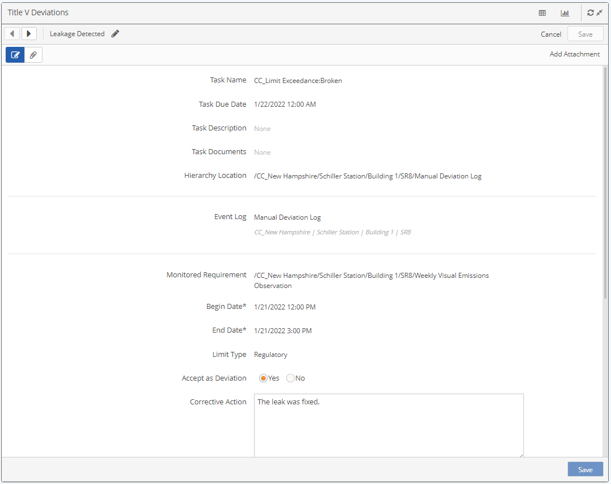
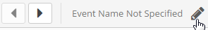
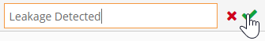
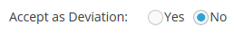
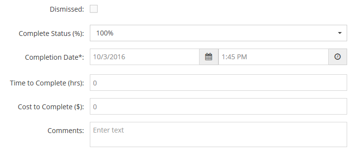

Click the Form icon: 
The event form will open showing the associated form fields.

If the event is related to a data limit exceedance, the monitored requirement will be shown along with the begin and end dates for the event, the limit type, and other data for the event.
Edit the form fields as applicable.
To edit the event name, click the pencil icon at the top of the form.

When done, click the checkmark.

Accept as Deviation: This field may be shown on the form when an event is created automatically as a result of a data exceedance recorded in the system. Yes means that the requirement will be treated as out of compliance for the event period. No means that the event will not be treated as a deviation for reporting purposes.

Task Completion: Task fields will be shown at the bottom of the form, if there is an associated task. To complete the task, select Complete Status=100% from the dropdown list, and enter Completion Date and Time (defaults to today's date and most recent 15 minutes). You can enter optional comments. Other fields are optional and display will depend on the configuration.

After making any edits, click Save to save your changes.
Click Cancel to return to the panel display without saving changes.
The Add Attachment link will be displayed on the top right of the form if you have permission to attach files.
To view existing attachments, select the paperclip button. The number of attachments are indicated on the button.

You may view PDFs and images directly and download other document types. See View or Add Attachments for more info.
Click the pencil button to return to the form view.

 icon.
icon.